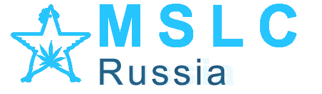

P4: 来自波兰，组建于2013年，是一支由安全研究人员、软件工程师以及学生组成的战队。
他们在gitclub上发表过一系列writeups，在本地的报刊杂志上也多有发稿，受邀参加了多个安全会议和议题分享，同时他们还为CTF初学者举办过小型CTF比赛。

MSLC： 来自俄罗斯的战队，在2015年他们获得过EKOPARTY CTF，PHD CTF Finals，CONFidence CTF及Belluminar Seoul等国际CTF比赛的冠军，团队曾经主办了QIWI
CTF 2014和Olympic CTF 2014比赛，他们的网站是http://mslc.ctf.su
DCUA：来自乌克兰基辅的CTF团队，获得过包括VolgaCTF在内的多个国际CTF比赛的冠军。
来自美国的战队，Shellphish 部分成员参加了美国国防部高级研究计划局（DARPA)主办的Cyber Grand 挑战赛的决赛，并从中获得了75万美元的奖金。
目前CTFTIME 2017年的世界排名为：第9名。
TokyoWesterns： 战队成员均在东京西部生活或是上学，战队名称因此得来；第三届Tokyo Westerns CTF 2017就由该战队举办。2017年WCTF的第二名，获得30000美金奖励。
目前CTFTIME 2018的世界排名为：第3名，CTFTIME 2017的世界排名为第5名。
NeSE: Never Stop
Exploiting战队，来自中国科学院大学，简称NeSE，由一批沉迷于网络攻防技术的极客组成。战队创办于2015年，是国科大网安学院特殊技能人才培养的代表性成果，近年来取得了2019年度世界黑客大师赛新锐赛冠军、2020年度腾讯信息安全争霸赛（TCTF)新星邀请赛冠军等优异战绩。
韩国战队，成立于2011年，成员来自高丽大学网络安全研究实验室，积极参与各类CTF比赛，了解最新的安全趋势。战队成员说尤其喜欢中国和中华美食（青岛是他们的最爱:-)）。2016年WCTF的第二名，获得30000美金奖励。
该战队是StraussAuhuur和KITCTF组成的联合战队。是一年一度的Chaos Communication Congress （混淆通信技术大会）中3CC3的主办者，曾参加过DEF
CON。正如战队名字传递出的信息一样，他们热爱pwing，希望所战队和他们一样享受这次比赛。
CTFTIME 2017的世界排名为第2名
BALSN：来自中国宝岛台湾，台湾大学的战队，CTFTIME全球排名2018年第5，在国内国际赛场战果丰硕，曾获首届XCTF联赛总决赛冠军，在国际重量级赛事Plaid CTF及SECCON
CTF中也均取得过第一名的好成绩。
来自中国的战队，由FlappyPig和Eur3ka联合组成。他们戏称r3kapig是美味佳肴，可烤可煎可炸，战队的使命就是为主人提供最美味的食物。